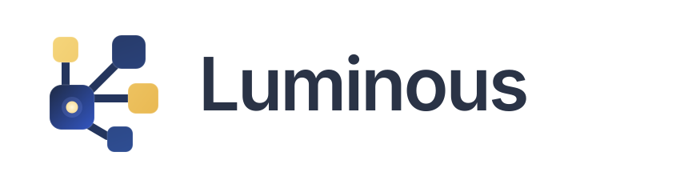

Horizontal Logo

Primary lockup for product pages, docs, dashboards, and general light UI surfaces.
Refined from the existing connected-node concept into a cleaner, more premium system mark. The hub is now more dominant, connectors use one consistent stroke, spacing is normalized on a tighter grid, and the yellow accent is softened so the palette feels more modern without losing the original identity.
